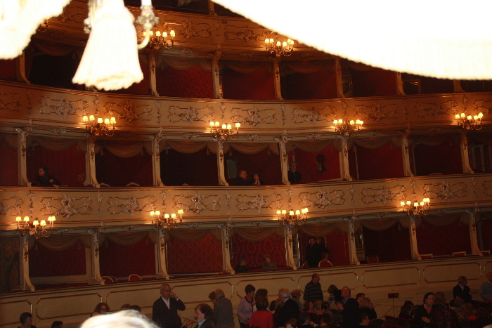
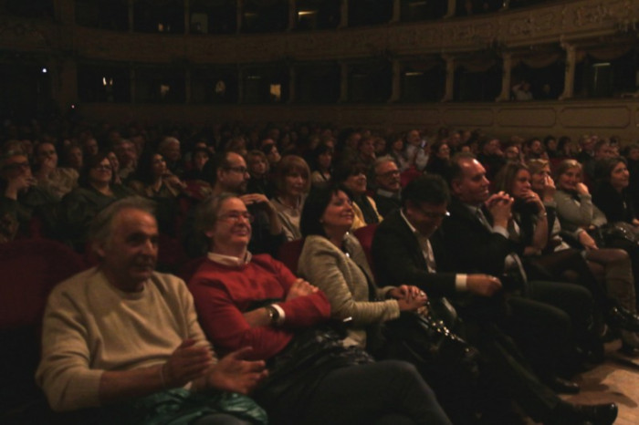

Una serata memorabile, con la sapiente regia di Dario Barezzi. Un teatro prestigioso, gremito in platea come nei loggioni. L'emozione di osservare il pubblico alla fine dello spettacolo, applaudire in piedi, sugli spezzoni di filmati di repertorio, del Maestro che dialoga con Barezzi
 